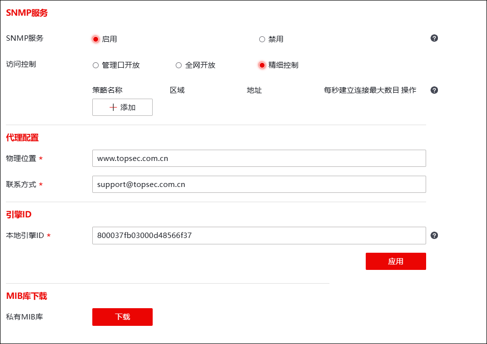

只有在NGFW上启动SNMP服务，才能支持SNMP管理主机管理并向SNMP陷阱主机主动发送Trap消息。
|
²如果接口加入到了“独立管理”界面，该接口仅可用于管理接口，不可作为业务接口。配置独立管理接口SNMP服务涉及功能包括：独立管理 和 本地服务，这两者相互依赖，任一功能模块没有开启SNMP服务，NGFW的独立管理接口的SNMP服务处于关闭状态。 ²开启独立管理接口SNMP服务的具体配置：1）选择 ，编辑独立管理接口时勾选“本地访问控制”参数的SNMP服务，详见 独立管理；2）选择 ，开启SNMP服务，详见本节内容。 |

启动SNMP服务控制的具体操作如下：
| 步骤1 | 选择 ，如下图所示。 |

| 步骤2 | 设置参数 |
在配置SNMP服务控制的参数时，各项参数的具体说明如下表所示。
参数 |
说明 |
|---|---|
SNMP服务 |
设置是否开启SNMP服务。配置snmp访问控制后才可生效。 |
访问控制 |
设置SNMP服务的访问控制规则，控制报文访问NGFW的SNMP服务。可选项：管理口开放、全网开放、精细控制。 Ø管理口开放：对“MANAGE_AREA”区域开放SNMP服务。有关“MANAGE_AREA”区域的设置详见 区域。 Ø全网开放，对任意区域任意主机开放SNMP服务。 Ø精细控制：仅对满足区域、地址和每秒建立连接最大数目条件的连接开放SNMP服务。 |
精细控制 |
“访问控制”参数选择“精细控制”，显示该参数。 点击【添加】可添加精细控制策略配置框。NGFW支持配置多条精细控制策略，配置的各条策略的关系为逻辑“或”。对于SNMP服务请求，仅有命中策略方可放行，否则将被拦截。 精细控制配置项包括：策略名称、区域、地址、每秒建立连接最大数目。 Ø策略名称：输入策略名称，用于区分不同策略。 Ø区域：开放SNMP服务的区域。 Ø地址：允许与SNMP建立SNMP通信的主机的IP地址。 Ø每秒建立连接最大数目：指SNMP服务的报文访问NGFW时，每秒新建连接的最大数目。如果实际连接速率超过配置值，企图新建连接的报文将被拦截，并产生“告警”级别的日志，记录被拦截的报文。 说明： 区域MANAGE_AREA表示管理域，地址IPv4_ANY表示所有IPv4地址，地址IPv6_ANY表示所有IPv6地址，地址GROUP_ADDRESS_ANY表示所有IP地址。 |
物理位置 |
记录设备在网络环境中的位置。设备出现故障问题时，方便管理员快速定位设备存放地点，默认显示天融信公司官方网站地址。 |
联系方式 |
记录设备直接责任人的联系方式，可以为电话号码或Email地址。通过配置此参数，将重要信息存储在NGFW中，以便出现紧急问题时查询使用。默认显示天融信公司客服的邮件地址。 |
本地引擎ID |
设置引擎ID。长度必须是偶数，如果是奇数，系统自动在尾部补0。 引擎ID是对SNMP模块进行管理的唯一标识，它在一个管理域内唯一的标识一个SNMP实体。 |
MIB库下载 |
点击“下载”输入密码，可下载MIB库加载到snmp服务端。 |
|
²修改参数的配置后，管理员必须重新启动SNMP服务才能使参数生效。 |

| 步骤3 | 点击【应用】按钮保存参数修改。如果没有修改默认参数，略去此步骤。 |